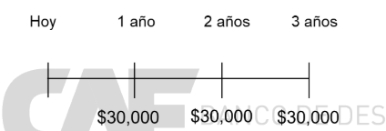

Comenzamos con dos definiciones:
Esta idea de que los precios de los activos en mercados competitivos son el mejor reflejo de su valor no sólo será importante para nuestro análisis de economía financiera: está entrando ya en otros campos, como la contabilidad corporativa. Gran parte de los activos del balance de la empresa todavía se valoran a valores de adquisición netos de depreciación acumulada. En el caso del coche que acabamos de ver, el valor de adquisición es de $18,000. La depreciación acumulada dependerá de unas tablas de depreciación estandarizadas.
Cada vez más, nos damos cuenta de que estos valores contables pueden no reflejar correctamente el patrimonio empresarial: ¿un edificio que está totalmente depreciado (valor contable cero) realmente vale "cero"? La contabilidad cada vez más está incorporando valoraciones "razonables" ("fair value accounting") en la normativa contable: el correcto valor de un activo no es su coste de adquisición, sino un valor de mercado, en concreto, "el valor que podría obtenerse al vender el activo de forma normal en un mercado competitivo".
El Valor Actual Neto (VAN) de una inversión es el valor actual de todos los cash-flows (positivos y negativos, incluidas las inversiones iniciales) o la diferencia entre el valor actual de los ingresos y el valor actual de los costes:
VAN = VA(Todos los cash-flows de la inversión) = VAN VA(Ingresos) – VA (costes)
En concreto, si la inversión es la compra de un activo,
VAN = VA(cash-flows futuros del activo) – Precio del activo
La regla de decisión del VAN: cuando elegimos entre posibles alternativas, debemos elegir siempre la alternativa con mayor VAN. Esto es equivalente a recibir el valor del VAN en efectivo hoy.
En caso de que la decisión sea aceptar/rechazar una inversión:
Un ejemplo de la regla del VAN:
Tenemos dos alternativas: pagar hoy $300 o quedarnos hoy los $300 y pagar $310 dentro de un año. Comparado con pagar hoy $300, el VAN de la alternativa propuesta por el vendedor tiene la secuencia de cash-flows: CFo=$300, CF1=$-310. El VAN de esta secuencia es:
VAN = $300 Ȃ $310/(1+10%) = $18.18
¡Deberíamos aceptar la forma alternativa de pago! Vamos a ver que esta forma es equivalente a tener hoy $18.18 en efectivo.
Tenemos los $300 que cuesta el frigorífico. Si los invertimos en un banco al 10%, dentro de un año tendremos $300×(1.10) =$330. Esto es dinero suficiente para pagar al vendedor $310, y nos sobrarán $20. El Valor Actual de esos $20 es $20/1.1=$18.18 exactamente.
Alternativamente, necesitamos tener $310 dentro de un año. Para tener esos $310 podemos depositar $310/1.1 = $281.82 hoy en el banco. Y nos sobran $300 - $281.82= $18.18 hoy!
Esta oportunidad de arbitraje (estrategia segura con VAN positivo) hará que muchos de los participantes en el mercado competitivo quieran aprovecharse.
Si participar en el mercado es fácil y tiene un coste bajo, la demanda del bono subirá, haciendo que el precio del bono suba... hasta que sea igual a $952.38. En ese momento ha desaparecido la oportunidad de arbitraje y el bono tiene el precio "correcto".
Finalmente, una implicación que es de importancia para economía financiera avanzada: una estrategia general para valorar activos puede ser encontrar "carteras" de activos más simples (con valores fácilmente obtenibles) que repliquen los flujos de caja de ese activo más complejo. Este tipo de estrategia de valoración se utiliza mucho para activos “complejos”.
1. Alguien te paga por escribir tus memorias. El problema es que, mientras las escribes, debes renunciar a tu sueldo normal, que es de $30,000 anuales. Te llevará los próximos tres años escribir tus memorias (y luego puedes volver a tu trabajo). Como pago por tus memorias, te ofrecen un pago de $100,000 al acabar, dentro de tres años. El tipo de interés al que puedes pedir dinero prestado o depositar tu dinero es del 5%. ¿Aceptarías la propuesta?
Solución: este ejercicio (similar a uno del bloque anterior) combina la valoración de flujos con la idea del VAN. Intuitivamente, la propuesta “memorias” nos da una secuencia de flujos de caja sencilla, con un solo pago de $150,000 al final del tercer año. La propuesta “seguir con mi salario” tiene una secuencia de flujos de caja de:
Para ver qué posibilidad nos interesa más, podemos comparar los valores actuales de las dos secuencias, que son Vmemorias = $100,000/(1.05)^3 = $86,383.76 y Vsalarios = $30,000/1.05 + $30,000/(1.05)^2 +$30,000/(1.05)^3 = $81,697.44. El valor actual de los salarios es menor que el valor actual de los pagos de la propuesta, así que deberíamos aceptar la propuesta, ya que tiene un valor actual mayor.
2. Nos ofrecen un proyecto de inversión que nos reportará un flujo anual de un millón de dólares anuales a perpetuidad. Suponiendo que la rentabilidad que nuestra empresa exige a un proyecto de este riesgo es del 10%, ¿cuánto sería el máximo desembolso inicial que estaríamos dispuestos a pagar por invertir en dicho proyecto?
¿Y si el flujo de un millón de dólares anuales se recibiera sólo durante los siguientes 10 años? Ahora nos dicen que la estimación es que el desembolso inicial del proyecto de inversión es de $3,000,000. ¿Debemos realizar el proyecto? (imagina que el proyecto dura 10 años)
Solución: el VA de los flujos recibidos por el proyecto de inversión perpetuo es V = $1,000,000/0.1 = $10,000,000. Por lo tanto, esto sería lo máximo que estaríamos dispuestos a pagar por este proyecto. Si el flujo se recibiera sólo durante 10 años, el VA del proyecto = $1,000,000/0.1 × (1-1/(1+0.1)^10) = $6,144,567.106. En cualquiera de los dos casos, si el desembolso inicial es sólo de $3,000,000, el proyecto es interesante, pues estamos “pagando” por él un precio menor a su valor. Este es el concepto de VAN.